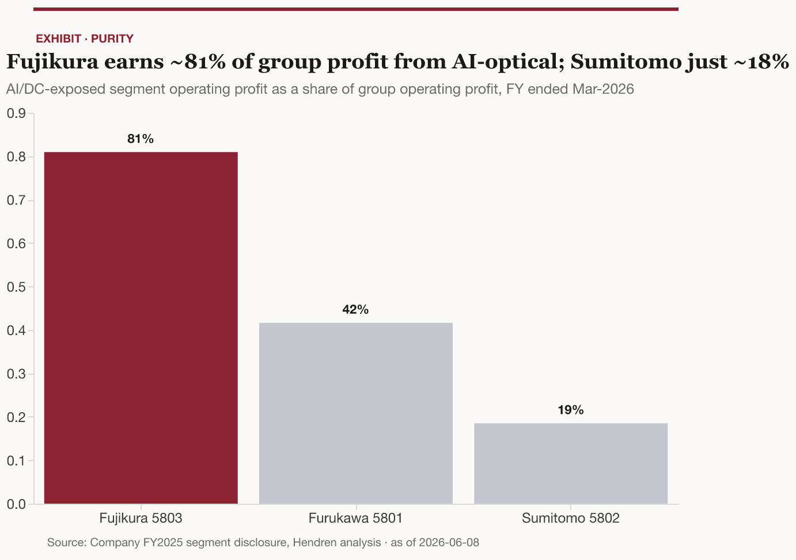
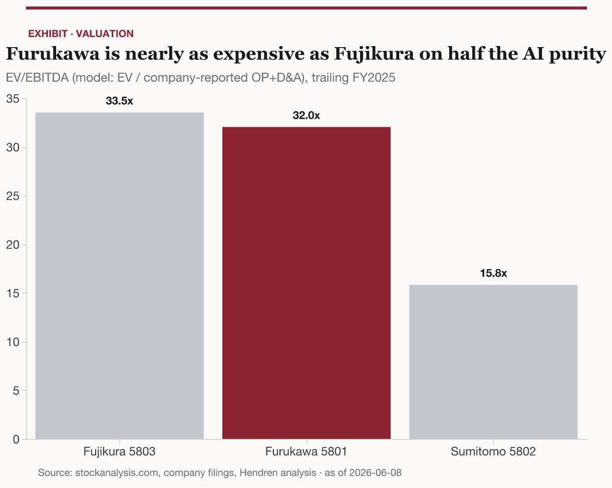
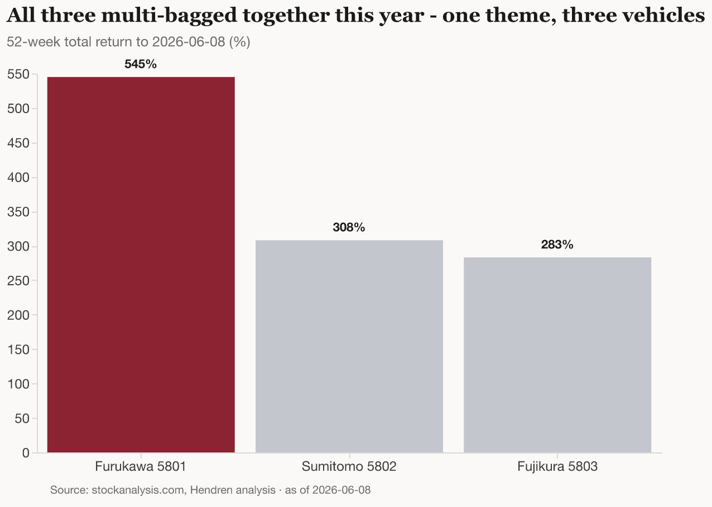

One AI-datacenter-optical theme, three very different vehicles — the purity spectrum, the valuation trap, and why an equal-weight basket is the disciplined way to own it.
Japan’s three listed “electric-wire” majors — Furukawa, Sumitomo Electric, and Fujikura — have become the cleanest public proxy for a single secular driver: the build-out of optical interconnect inside AI datacenters. All three are century-old cable conglomerates; all three multi-bagged over the past year on the same AI-optical story; and all three sold off near-identically in the May–June 2026 “Japan cable-maker rout.” That co-movement is the central fact. This is one theme expressed through three vehicles, not three independent bets.
The vehicles differ enormously in three dimensions that determine what you actually own:
The recommendation: for an investor who wants exposure to AI-datacenter optical interconnect but cannot confidently pick the winner, an equal-weighted basket of all three is the disciplined default. It keeps full thematic beta while diversifying the idiosyncratic blow-up risk that just played out — Fujikura’s below-consensus guidance, Furukawa’s leverage, Sumitomo’s auto/tariff drag. What the basket does not do is diversify the theme: a multiple reset hits all three within a few points of each other (the model’s sensitivity table puts a 30% de-rating at –30% to –32% for every name). Because the names sit at 3–7x off their 52-week lows and the May rout showed the re-rating is fragile, this is a high-beta thematic satellite to size as a satellite — not a core holding — and entry matters. For investors with a firmer view: concentrate in Fujikura for maximum quality and purity (and accept peak-multiple, peak-cycle risk), or own Sumitomo as the cheap, defensive way to keep a toe in. Furukawa is the one to be most careful with — it trades nearly as expensive as Fujikura on roughly half the AI purity, with the most leverage and the most beta.
Furukawa, Sumitomo Electric, and Fujikura are Japan’s “electric-wire majors” (the densen gosanke, literally the wire industry’s “big three”) — a recognized market cohort whose tickers even run in sequence (5801/5802/5803) 5. Each was founded around copper wire and cable more than a century ago, and each has since diversified into a different mix of automotive, energy, electronics, and telecom. What unites them now is optical fiber: all three are top-tier global makers of the glass strand and cable that carry the world’s data, and all three sit in the global top six of fiber-optic cable revenue (Prysmian #1, Corning #2, Sumitomo #3, Furukawa #4, CommScope #5, Fujikura #6) 6.
The base optical-fiber business is, by itself, a slow grower: the global market for pure fiber strand was roughly US$12.7B in the base year and is forecast to reach ~US$18.7B by 2031, a ~5.8% CAGR 7. That is not the story driving these stocks. The story is the AI-datacenter overlay sitting on top of it.
Why now. The same physical product — high-count optical fiber, connectors, and transceivers — is being pulled into a far faster-growing end market (AI datacenters) at the exact moment fiber is in short supply. That demand mix-shift, not the underlying telecom market, is what re-rated the cohort.
The thing being bought is the optical plumbing of the AI datacenter. As GPU clusters scale, the interconnect between chips, servers, and buildings shifts from copper to optics, and the fiber counts per cable, the connector density, and the transceiver speeds all step up together.
The size of the prize. The AI-attributable slice of fiber and optics is growing several times faster than the base market. One bottom-up digest puts the AI-datacenter-attributable fiber-plus-optics category at ~US$25.8B in 2026 rising to ~US$63.5B by 2029 — roughly a 35% CAGR 8. Independent cuts corroborate the order of magnitude: Cignal AI counted ~US$25B of optical-component revenue in 2025 9, and the narrower data-center-interconnect (DCI) sub-segment is projected to grow from ~US$15.4B (2025) to ~US$25.9B (2030) 10. Methodologically these are different lenses — a bottom-up component count versus a defined sub-segment — and they converge on a mid-$20Bs 2026 demand pool, which is what gives the demand number credibility rather than a single vendor’s headline.
The technology that matters. Three product vectors carry the AI-optical demand, and the three Japanese majors are positioned differently on each:
A required reality check. Bernstein’s framing is the discipline against over-extrapolation: inside the rack (“scale-up,” GPU-to-GPU), copper remains dominant and will for some time; CPO begins at limited scale in scale-out networks around H2 2026, with scale-up adoption not until ~2028+ 1717. And CPO’s bigger effect is to reallocate the optical profit pool toward engines, fiber-array units, and lasers rather than to expand the total dramatically 17. The bull case is real but it is a multi-year ramp with a copper-shaped ceiling, not a step-change.
The near-term tailwind that is not speculative: fiber is in active shortage, and the supply tightness is already producing 2026 price increases 13. That is margin-positive for all three today, ahead of any CPO transition.
The single most important distinction across the three is how concentrated each is in the AI-optical story. The cleanest disclosed gauge is the share of group operating profit earned by each company’s AI/datacenter-exposed segment.

A useful grounding cross-check sizes each company’s 2026 AI-datacenter fiber revenue at similar absolute scale — Fujikura’s US subsidiary AFL ~US$0.8B, Sumitomo ~US$0.6B, Furukawa ~US$0.4B 888 — which tells you the purity difference is driven as much by how small the rest of Fujikura is as by how large its AI business is. That is the right way to read the spectrum: you are choosing how much non-AI ballast to accept alongside the same theme.
All three printed record results for the year ended March 2026. The table below is the model’s comps output; every figure ties to a cell in japanese-fiber-majors-comps_v1_2026-06-08.xlsx.
| Metric (FY ended Mar-2026) | Furukawa 5801 | Sumitomo 5802 | Fujikura 5803 |
|---|---|---|---|
| Net sales (¥B) | 1,307.6 21 | 5,110.2 3 | 1,182.4 22 |
| Operating profit (¥B) | 63.9 21 | 418.2 3 | 188.7 22 |
| Operating margin | 4.9% 21 | 8.2% 3 | 16.0% 22 |
| Net income (¥B) | 72.5 21 | 369.5 3 | 157.2 22 |
| Market cap (¥B) | 3,184 23 | 9,470 24 | 7,290 25 |
| Market cap (US$B) | ~19.9 | ~59.1 | ~45.5 |
| Enterprise value (¥B) | 3,432 23 | 9,943 26 | 7,210 25 |
| P/E trailing (x) | 43.9 | 25.6 26 | 46.4 |
| EV/EBITDA — model (x) | 32.0 | 15.8 26 | 33.5 |
| P/B (x) | 7.6 23 | 3.5 26 | 13.0 |
| EV/Sales (x) | 2.6 | 2.0 | 6.1 |
| ROE (period-end equity) | 17.4% | 13.5% | 28.1% |
| Dividend yield | 0.45% 23 | 1.2% 24 | 0.80% |
| Net debt/EBITDA (x) | 2.3 | 0.75 26 | –0.4 (net cash) |
| Beta (5Y) | 1.17 4 | 0.89 27 | 0.78 4 |
| 52-wk total return | +545% 28 | +308% 29 | +283% 30 |
USD conversions at USD/JPY 160.13 31. EV/EBITDA is computed on a single consistent basis — EV ÷ (company-reported operating profit + D&A) — for all three names. Third-party screens show 28.0x / 16.1x / 34.4x 232425; the Furukawa screen figure of 28.0x is not internally consistent with the same screen’s own reported EBITDA (which implies ~32x), so the model uses the consistent computed basis.

Two reconciliation points are worth stating plainly, because each is also a thesis point:
The shared re-rating. Over the trailing year all three names compounded several-fold — Furukawa +545%, Sumitomo +308%, Fujikura +283% 282930 — and Fujikura’s multi-year record is extraordinary (+~400% in 2024 as the best Nikkei 225 performer, +~155% in 2025) 3334. The point of the chart below is not the absolute moves but their togetherness: this cohort re-rates and de-rates as one.

Fujikura is the highest-quality and highest-purity vehicle. FY2025 was a record across the board: sales ¥1,182.4B (+20.7%), operating profit ¥188.7B (+39.2%) at a 16.0% margin, net income ¥157.2B (+72.5%) 222222. The balance sheet is pristine — a 57.8% equity ratio, ¥181.2B of cash, and an essentially net-cash position 3535 — which on period-end equity puts ROE at ~28% (and higher on an average-equity basis). The AI-optical engine is the whole story: telecom OP up 1.7x to ~81% of group profit 11, driven by differentiated ultra-high-density cable, a Verizon-certified air-blown product, and supply relationships across all the hyperscalers 113636. Management’s new mid-term plan targets ¥315B of OP at a 28.5% ROE, with up to ¥260B of US investment to roughly quadruple optical-fiber-cable capacity versus FY2022 373838.
The bull case is that AI-optical demand compounds, fiber stays tight, and Fujikura’s purity plus best-in-class margins and balance sheet make it the franchise to own; Goldman rates it Buy at a target 19.0x EV/EBITDA — the highest multiple in its Japan coverage 13. (The GS targets cited throughout are from its January 2026 update, which predates the May-2026 FY2025 results; treat them as a relative-conviction signal, not a refreshed price view.)
The bear case is valuation and cycle. At ~34x EV/EBITDA and ~13x book 25, the stock prices in continued hypergrowth — Fujikura’s ~¥7.3T market cap now exceeds three-quarters of Sumitomo’s on roughly a quarter of Sumitomo’s revenue 39. It guided FY2027 below consensus 22, and its three-year plan landed so far short of expectations (¥315B FY2029 OP vs a ¥460.5B consensus) that the stock plunged 17% on the day 32; a US tariff dispute cost ¥12.8B this year 18; and >50% US revenue concentration adds policy risk 34. You are paying the peak multiple for peak purity at what may be peak cycle — the asymmetry that makes the single name riskier than its quality suggests.
Furukawa is the most operationally and financially geared of the three, and the most awkward on valuation. FY2025 sales were ¥1,307.6B (+8.8%) with OP up 35.8% to ¥63.9B — but at just a 4.9% margin, a third of Fujikura’s 2121. Reported net income of ¥72.5B (+117%) and a 19.1% reported ROE (17.4% on period-end equity in the table above) flatter the picture: ~¥29.1B was one-off extraordinary income, so the operating read is the cleaner +36% 221. Furukawa is building its AI-optical position aggressively — a reorganization to “accelerate growth in the data center domain,” the Lightera optical brand, the ¥4.4B acquisition of (loss-making) Fujitsu Optical Components, and a 67% stake in connector-maker Hakusan 240414243. The datacenter segments are guided from ~42% to ~70% of group OP 2.
The bull case is the operating leverage: a low-margin base means datacenter mix-shift drops disproportionately to profit, and FY2026 guidance of ¥95B OP (+48.8%) reflects exactly that 21. Furukawa beat every target in its prior mid-term plan 2.
The bear case is that the market already pays for it. Furukawa trades at ~32x EV/EBITDA and ~7.6x book — nearly Fujikura’s multiple on roughly half the purity and a third of the margin — while carrying the most leverage (net debt/EBITDA ~2.3x) and the highest beta (1.17) of the three 2324. Goldman is Neutral at an 8.5x target multiple 13. The +545% trailing-year move is the largest of the cohort 28, which cuts both ways: most upside if the theme runs, most downside on a reset. Of the three, Furukawa offers the least valuation cushion for its risk.
Sumitomo is the large, cheap, diversified blue-chip — and the least AI-levered. FY2025 sales crossed ¥5T for the first time (¥5,110.2B, +9.2%) with OP of ¥418.2B at an 8.2% margin 333. But the company is dominated by automotive wiring harnesses (57.5% of sales) and power/energy infrastructure (23.1%); optical is just 6.4% of sales, and the genuinely AI-datacenter slice is ~2–3% 33320. The AI-optical piece is nonetheless high-quality and accelerating — Infocommunications OP margin reached 19%, and the segment is guided to ¥500B sales (+53%) and ¥130B OP in FY2026 with capex tripling 44333 — and Sumitomo holds genuine strategic optionality as a named NVIDIA CPO partner 14.
The bull case is valuation and defensiveness: at ~16x EV/EBITDA, ~3.5x book, a 25.6x trailing P/E and a ~1.2% yield 26262624, Sumitomo is half the multiple of the other two, with the lowest beta (0.89) and the diversification of a true industrial conglomerate. Its 2028 mid-term plan targets ¥6T sales and ¥600B OP at a >13% ROE 454545. If AI-optical compounds, Infocommunications could grow toward ~20% of the company 44 — a real call option you are buying cheaply.
The bear case is the mirror image: you get the least AI exposure, so in an up-tape Sumitomo lags (it returned “only” +308% versus Furukawa’s +545%) 2928, and the bulk of the company is exposed to autos and tariffs rather than datacenters. Tellingly, Goldman’s Buy target of ¥7,350 sits below the current price — the market has run past even the bullish sell-side case 46. Sumitomo is the way to own the theme with a seatbelt — but the seatbelt is most of the car.
The case for treating these as a basket rests on one empirical fact and one structural one.
Empirically, they move together. They are a named cohort that multi-bagged in unison and sold off in unison — all three fell roughly 7% on the 2026-06-08 session alone, and the broader May-2026 cable-maker rout hit all three after Fujikura’s weak guidance 532. High co-movement means a basket does little to diversify theme risk.
Structurally, the single-name risks are idiosyncratic and offsetting. Fujikura’s risk is a growth-guidance miss; Furukawa’s is leverage and an expensive multiple; Sumitomo’s is auto/tariff drag and AI under-exposure. An equal-weighted basket diversifies precisely these company-specific risks while retaining full thematic beta.
The model makes the trade-off explicit:
How to choose:
| If your view is… | Vehicle |
|---|---|
| “I want the theme but can’t pick the winner” | Equal-weight basket — the disciplined default |
| “AI-optical compounds; I want maximum quality/purity” | Fujikura — accept peak-multiple, peak-cycle risk |
| “I’m skeptical of the re-rating; give me cheap, defensive exposure” | Sumitomo — cheap, diversified, NVIDIA-CPO optionality |
| “I want maximum operating leverage to the theme” | Furukawa — but the least valuation cushion for the risk |
What would change the view to “concentrate, don’t basket”: clear evidence that AI-optical demand is durable through a capex cycle (multi-quarter hyperscaler order visibility) and that Fujikura’s premium is supported by widening margin/share — that combination would favor concentrating in the purest name over diluting into the cohort.
This is a rare case where the cleanest way to play a powerful theme is also a diversifiable one. The three Japanese fiber majors give you the same AI-datacenter-optical driver at three different concentrations, valuations, and risk profiles. After a year in which all three tripled-to-quintupled and then wobbled together, the prudent expression is an equal-weighted basket sized as a thematic satellite — full theme beta, diversified single-name risk, entry-sensitive. Investors with conviction on durability and quality should concentrate in Fujikura; investors who want the theme with downside protection should own Sumitomo; and Furukawa, the expensive, geared middle, earns the most caution. The one thing the basket cannot do — and no construction can — is protect against the theme itself cooling. That, not stock selection, is the risk to underwrite.
Full provenance (verbatim quotes, source URLs, local snapshots, retrieval dates) is in the findings sidecar 2026-06-08-japanese-fiber-majors-deep-dive.md.findings.jsonl (216 findings, S001–S216). Headline anchors: company FY2025 results (tanshin / Fact Book / results presentations, filed May 2026) for all financials and segments; stockanalysis.com and FMP for same-day market data; Goldman Sachs “Era of Optics” / Japan Technology (via Noldor) for ratings and target multiples; Valuates/QYResearch, Cignal AI, MarketsandMarkets, LightCounting, and a Noldor fiber-optics demand digest for market sizing; Bernstein (via Noldor) for the CPO/copper reality check. The comparative model is japanese-fiber-majors-comps_v1_2026-06-08.xlsx; charts are rendered from it and re-verified against its cells at audit.
Prepared for John Hendren. Source: named primary providers, Hendren analysis. Not investment advice; figures are indicative and as of 2026-06-08.
note.com “Telecommunication Systems segment OP share of total company operating profit FY ended March 2026”, 2026-05-15 · https://note.com/kabuya66/n/n95038053aa7b · local: 2026-06-08-note.com-kabuya66-n-n95038053aa7b.md · news-aggregator ↩↩↩↩↩↩↩
www.furukawaelectric.com “FY2025 operating profit of the two data-center-centric segments (Optical Solutions JPY 10.7B + Digital Infrastructure Components JPY 15.9B) = JPY 26.6B, ~41.6% of group OP (JPY 63.9B); guided to ~70% of group OP in FY2026”, 2026-05-12 · https://www.furukawaelectric.com/en/ir/library/finalreport/pdf/2026/20260512_pre.pdf · local: 2026-06-08-www.furukawaelectric.com-en-ir-library-finalreport-pdf-2026-20260512-pre-pdf.bin · Primary ↩↩↩↩↩↩↩↩↩↩↩↩
sumitomoelectric.com “Sumitomo Electric Infocommunications segment operating income FY2025”, 2026-05-12 · https://sumitomoelectric.com/sites/default/files/2026-05/download_documents/fb2025_allv_0.pdf · local: 2026-06-08-sumitomoelectric.com-sites-default-files-2026-05-download-documents-fb2025-allv-0.bin · Primary ↩↩↩↩↩↩↩↩↩↩↩↩↩↩↩↩↩↩↩
news-aggregator “5Y betas: Furukawa 1.17 (only one >1; smallest, most levered), Sumitomo 0.89, Fujikura 0.78. All three fell near-identically on 2026-06-08 (Furukawa -7.7%, Sumitomo -6.7%, Fujikura -7.3%), evidencing high short-term co-movement within the cohort”, 2026-06-08 · local: FMP profile-symbol + stockanalysis.com (2026-06-08) · news-aggregator ↩↩↩↩
www.japantimes.co.jp “The three are a recognized market cohort — Japan's 'electric-wire Big Three' (Furukawa 5801, Sumitomo 5802, Fujikura 5803) — which surged together 2024-2026 on AI-data-center optical demand and sold off together in the May 2026 'Japan cable maker rout'; high thematic co-movement”, 2026-05-26 · https://www.japantimes.co.jp/business/2026/05/26/companies/japan-ai-stocks-fragility/ · local: 2026-06-08-www.japantimes.co.jp-business-2026-05-26-companies-japan-ai-stocks-fragility.md · news-aggregator ↩↩
trade-press “Global fiber-optic cable revenue ranking (GII/Mordor 2025-2030): #1 Prysmian, #2 Corning, #3 Sumitomo Electric, #4 Furukawa Electric, #5 CommScope, #6 Fujikura”, 2026-06-01 · local: 2026-06-01-optical-fiber-and-display-glass-market-shares.md · Trade press ↩
reports.valuates.com “Global optical fiber (pure strand) market ~US$12.68B (base year) → US$18.7B by 2031, ~5.8% CAGR; single-mode >95% of product; top five makers hold >40% share”, 2026-06-01 · https://reports.valuates.com/market-reports/QYRE-Auto-23J10091/global-optical-fiber · local: 2026-06-01-optical-fiber-and-display-glass-market-shares.md · Trade press ↩
Noldor: fiber optics category digest (2026-05-12 ai-infra-market-map) “Fiber+Optics AI-DC-attributable gross category (base case): $25.8B in 2026 rising to $63.5B in 2029, ~35% CAGR (bear $22B→$48B / 30%; bull $32B→ up)”, 2026-05-12 · Noldor: fiber optics category digest (2026-05-12 ai-infra-market-map) · Trade press ↩↩↩↩↩
cignal.ai “Cignal AI: optical components reached nearly $25B revenue in 2025 (datacom >$18B); datacom forecast ~$29B by 2029 (20%+ CAGR)”, 2026-01-07 · https://cignal.ai/2026/01/optical-component-revenue-reaches-nearly-25b-in-2025/ · local: 2026-06-08-cignal.ai-2026-01-optical-component-revenue-reaches-nearly-25b-in-2025.md · Trade press ↩
www.marketsandmarkets.com “Data center interconnect (DCI) market projected to grow from USD 15.38B in 2025 to USD 25.89B by 2030, 11.0% CAGR (MarketsandMarkets)”, 2025-08-19 · https://www.marketsandmarkets.com/PressReleases/data-center-interconnect.asp · local: 2026-06-08-www.marketsandmarkets.com-pressreleases-data-center-interconnect-asp.md · Trade press ↩
corporate.quick.co.jp “Highest-density WTC optical fiber cable: fiber count in a 29mm-diameter cable (world's smallest at this core count) — flagship AI-DC product”, 2024-11-18 · https://corporate.quick.co.jp/en/japanmarketsview/equity/fujikura-5803-expands-performance-driven-by-growing-data-center-demand/ · local: 2026-06-08-corporate.quick.co.jp-en-japanmarketsview-equity-fujikura-5803-expands-performance.md · Trade press ↩↩
www.furukawaelectric.com “Furukawa started mass production of a 13,824-count optical fiber cable (one of world's highest fiber densities, <40mm dia via rollable ribbons of 16x 200um fibers) for hyperscale data centers”, 2026-03-12 · https://www.furukawaelectric.com/en/release/2026/comm_20260312.html · local: 2026-06-08-www.furukawaelectric.com-en-release-2026-comm-20260312-html.md · Primary ↩
Noldor: japan fiber optics gs “Fujikura's AI growth driver is differentiated ultra-high-density fiber-optic cable (SWR/spider-web-ribbon) + optical connectors (MT ferrule); GS Exhibit 7 shows capacity ramp plans — SWR 1.5x and optical connector (MT ferrule) 3x — after refocusing post-FY3/20 losses on telecom (cables/connectors)”, 2026-01-05 · Noldor: japan fiber optics gs · Sell-side ↩↩↩↩↩↩↩↩
Noldor: Seizing the Global Growth Opportunity (research_report) “Sumitomo Electric selected as a technology partner for NVIDIA in co-packaged optics (CPO) ecosystem”, 2026-01-05 · Noldor: Seizing the Global Growth Opportunity (research_report) · Sell-side ↩↩
Noldor: Seizing the Global Growth Opportunity (Morgan Stanley) “On CPO, Furukawa Electric and Shinko Electric Industries are promoting joint development with NTT (one of the three CPO-leading groups alongside NVIDIA and Broadcom)”, 2025-12-01 · Noldor: Seizing the Global Growth Opportunity (Morgan Stanley) · Sell-side ↩
www.lightcounting.com “LightCounting: Ethernet optical transceivers for AI clusters reach $26B in 2026, +60% YoY from $16.5B in 2025; $100B market for AI cluster optics by 2030”, 2026-03-01 · https://www.lightcounting.com/newsletter/en/march-2026-ethernet-optics-382 · local: 2026-06-08-www.lightcounting.com-newsletter-en-march-2026-ethernet-optics-382.md · Trade press ↩
Noldor: futunn bernstein 97pp interconnect summary “Bernstein core thesis: in scale-up (intra-rack GPU-to-GPU) copper remains dominant; Jensen Huang explicitly stated NVIDIA will NOT immediately adopt CPO for primary flagship-GPU interconnects (copper more reliable); optics wins in scale-out (inter-rack, longer reach)”, 2026-05-19 · Noldor: futunn bernstein 97pp interconnect summary · Sell-side ↩↩↩↩↩
ae.marketscreener.com “Telecommunication Systems segment OP growth multiple vs prior year FY ended March 2026”, 2026-05-14 · https://ae.marketscreener.com/news/fujikura-presentation-material-for-fy2025-ce7f5bddd988f124 · investor-presentation ↩↩↩
Noldor: fiber optics category digest (research_note, 2026-05-01) “Sumitomo Electric estimated AI-datacenter fiber+cable revenue 2026 (internal research-note estimate)”, 2026-05-01 · Noldor: fiber optics category digest (research_note, 2026-05-01) · Sell-side ↩↩
other “Sumitomo Electric estimated AI/datacenter-optical revenue as share of total group sales FY2025”, 2026-06-08 · local: computed:factbook-fy2025-segment-mix · other ↩↩
www.furukawaelectric.com “FY2025 (ended Mar 31 2026) consolidated net sales JPY 1,307,560M (+8.8% YoY)”, 2026-05-12 · https://www.furukawaelectric.com/en/ir/library/finalreport/pdf/2026/20260512.pdf · local: 2026-06-08-www.furukawaelectric.com-en-ir-library-finalreport-pdf-2026-20260512-pdf.bin · Primary ↩↩↩↩↩↩↩↩↩↩
finance.biggo.com “Consolidated net sales FY ended March 2026 (FY2025): record high, +20.7% YoY”, 2026-05-14 · https://finance.biggo.com/news/jpx_tdnet_140120260514532598 · local: 2026-06-08-finance.biggo.com-news-jpx-tdnet-140120260514532598.md · Primary ↩↩↩↩↩↩↩↩↩
stockanalysis.com “Furukawa Electric is the smallest of the three by market cap (~¥3.18T); EV ~¥3.46T; revenue ~¥1.31T LTM; EBITDA ~¥107B; net debt ~¥258B; consensus Buy, 9 analysts; 52-week price change ~+545% (largest move of the three)”, 2026-06-08 · https://stockanalysis.com/quote/tyo/5801/statistics/ · local: 2026-06-08-stockanalysis.com-quote-tyo-5801-statistics.md · news-aggregator ↩↩↩↩↩↩↩
stockanalysis.com “Sumitomo Electric is the largest of the three by market cap (~¥9.5-10.2T) and revenue (~¥5.1T LTM); EV ~¥10.6T; EBITDA ~¥628B; net income ~¥370B; consensus Buy, 10 analysts; 52-week change ~+308%”, 2026-06-08 · https://stockanalysis.com/quote/tyo/5802/statistics/ · local: 2026-06-08-stockanalysis.com-quote-tyo-5802-statistics.md · news-aggregator ↩↩↩↩
stockanalysis.com “Fujikura market cap ~¥7.29T, EV ~¥7.8T (net cash ~¥80B), revenue ~¥1.18T LTM, EBITDA ~¥215B, net income ~¥157B; consensus Strong Buy, 11 analysts; 52-week price change ~+283%”, 2026-06-08 · https://stockanalysis.com/quote/tyo/5803/statistics/ · local: 2026-06-08-stockanalysis.com-quote-tyo-5803-statistics.md · news-aggregator ↩↩↩↩
other “Sumitomo Electric enterprise value (mktcap + IBD - cash)”, 2026-06-08 · local: computed:price-12140-x-factbook-fy2025 · other ↩↩↩↩↩↩↩↩
news-aggregator “Sumitomo Electric beta vs market”, 2026-06-08 · local: FMP:profile-symbol:5802.T · news-aggregator ↩
simplywall.st “Furukawa Electric stock rose ~470-530% over the trailing year (to ~2026-06), vastly outperforming JP Electrical industry +55.6% and JP market +18.3% — a clear AI/data-center re-rating”, 2026-06-08 · https://simplywall.st/stocks/jp/capital-goods/tse-5801/furukawa-electric-shares · local: 2026-06-08-simplywall.st-stocks-jp-capital-goods-tse-5801-furukawa-electric-shares.md · news-aggregator ↩↩↩↩
news-aggregator “Sumitomo Electric share price multiple from 52-week low to high (AI re-rating magnitude)”, 2026-06-08 · local: FMP:profile-symbol:5802.T + TSE 52wk range · news-aggregator ↩↩↩
in.tradingview.com “1-year total share price return (to ~May/Jun 2026)”, 2026-05-01 · https://in.tradingview.com/symbols/TSE-5803/ · local: 2026-06-08-in.tradingview.com-symbols-tse-5803.md · news-aggregator ↩↩
news-aggregator “USD/JPY = 160.13 on 2026-06-08 (yr range 142.7-160.7). Cross: Furukawa ¥3.18T ≈ $19.9B; Sumitomo ¥9.47T ≈ $59.1B; Fujikura ¥7.29T ≈ $45.5B market cap”, 2026-06-08 · local: FMP forex USDJPY 2026-06-08 · news-aggregator ↩↩
www.bloomberg.com “Fujikura shares plunged 17% (closing JPY4,695, down JPY958) on 2026-05-19 after its three-year mid-term plan targeted JPY315B FY2029 OP, well below the QUICK consensus of JPY460.5B”, 2026-05-19 · https://www.bloomberg.com/news/articles/2026-05-19/fujikura-shares-plunge-after-three-year-forecast-dents-ai-hope · local: 2026-06-08-finance.biggo.com-news-2q3gqp4bnl–4-gtkpy.md · news-aggregator ↩↩↩
www.businesstimes.com.sg “Calendar-2024 share price gain (best performer on Nikkei 225)”, 2024-11-25 · https://www.businesstimes.com.sg/international/global/ai-boom-makes-139-year-old-cable-maker-japans-hottest-stock · local: 2026-06-08-www.businesstimes.com.sg-international-global-ai-boom-makes-139-year-old-cable-maker-.md · news-aggregator ↩
www.dividendjapan.com “Calendar-2025 share price gain (YTD as of Oct 2025)”, 2025-10-21 · https://www.dividendjapan.com/p/fujikura-japan-connectivity-ai-dividend-2025 · local: 2026-06-08-www.dividendjapan.com-p-fujikura-japan-connectivity-ai-dividend-2025.md · news-aggregator ↩↩↩
www.marketscreener.com “Equity ratio as of March 31, 2026 (low-leverage balance sheet)”, 2026-05-14 · https://www.marketscreener.com/news/fujikura-consolidated-financial-results-for-the-fiscal-year-ended-march-31-2026-under-japanese-g-ce7f5bddd988f222 · Primary ↩↩
Noldor: Era of Optics (GS Japan Technology Hardware - Industrial Electronics, 2025-07-07) “Air Blown WTC max core count (Verizon WTC certification obtained 13 May 2025) — DCI/medium-distance product”, 2025-07-07 · Noldor: Era of Optics (GS Japan Technology Hardware - Industrial Electronics, 2025-07-07) · Sell-side ↩↩
finance.biggo.com “Mid-Term Plan operating profit target (near-term milestone, ~FY ending March 2029)”, 2026-05-19 · https://finance.biggo.com/news/2Q3GQp4BNl__-4_GtKpy · local: 2026-06-08-finance.biggo.com-news-2q3gqp4bnl–4-gtkpy.md · Primary ↩
m.au.investing.com “Mid-Term Plan ROE target (at the ¥315bn OP milestone)”, 2026-05-19 · https://m.au.investing.com/news/stock-market-news/fujikura-unveils-mediumterm-plan-with-operating-profit-target-of-580bn-93CH-4444863 · Primary ↩↩↩
fortune.com “Despite revenue ~one-quarter of Sumitomo Electric's, Fujikura reached ~¥6.8-7.3T market cap, nearly matching Sumitomo's ~¥7-9.5T — market focus shifted from 'scale' to 'contribution to AI infrastructure'; Fujikura earns the majority of profits from infocomm/data-center business”, 2026-06-08 · https://fortune.com/2024/11/24/ai-boom-fukijura-stock-data-center-cable-company-nikkei-225-japan/ · local: 2026-06-08-fortune.com-2024-11-24-ai-boom-fukijura-stock-data-center-cable-company-.md · news-aggregator ↩
www.furukawaelectric.com “Lightera brand launched April 1 2025 under Lightera Holding G.K. — integrates Furukawa's optical fiber & cable business; becomes core of new Optical Solutions segment”, 2025-03-06 · https://www.furukawaelectric.com/en/release/2025/comm_20250306.html · local: 2026-06-08-www.furukawaelectric.com-en-release-2025-comm-20250306-html.md · Primary ↩
www.marketscreener.com “Furukawa completed acquisition of Fujitsu Optical Components (FOC) from Fujitsu on April 1 2025 for ~JPY 4.4B; renamed Furukawa FITEL Optical Components”, 2025-04-01 · https://www.marketscreener.com/quote/stock/FUJITSU-LIMITED-6492460/news/Furukawa-Electric-Co-Ltd-completed-the-acquisition-of-Fujitsu-Optical-Components-Limited-from-Fuj-49510868/ · news-aggregator ↩
www.marketscreener.com “Fujitsu Optical Components (acquired) had FYE-Mar-2024 revenue JPY 13.68B and operating LOSS JPY 10.28B — a turnaround/strategic optical-transceiver acquisition”, 2024-12-12 · https://www.marketscreener.com/quote/stock/FUJITSU-LIMITED-6492460/news/Furukawa-Electric-Co-Ltd-agreed-to-acquire-Fujitsu-Optical-Components-Limited-from-Fujitsu-Limite-48586423/ · news-aggregator ↩
www.furukawaelectric.com “Furukawa acquiring 67% of Hakusan Inc. (announced Nov 7 2024); Hakusan holds #2 global share in multi-fiber MT ferrules / MPO optical connectors for hyperscale data centers”, 2024-11-07 · https://www.furukawaelectric.com/en/release/2024/kei_20241107.html · local: 2026-06-08-www.furukawaelectric.com-en-release-2024-kei-20241107-html.md · Primary ↩
Noldor: Era of Optics (Goldman Sachs, Japan Technology: Hardware - Industrial Electronics) “Sumitomo Electric Infocommunications business operating margin reached 19% in 2Q FY3/26 (GS estimate)”, 2026-01-05 · Noldor: Era of Optics (Goldman Sachs, Japan Technology: Hardware - Industrial Electronics) · Sell-side ↩↩
sumitomoelectric.com “Sumitomo Electric Mid-term Management Plan 2028 net sales target (FY2028)”, 2026-05-12 · https://sumitomoelectric.com/sites/default/files/2026-05/download_documents/28me.pdf · local: 2026-06-08-sumitomoelectric.com-sites-default-files-2026-05-download-documents-28me-pdf.bin · investor-presentation ↩↩↩
Noldor: japan fiber optics gs “Goldman Sachs 12-month price target for Sumitomo Electric (5802.T), Buy rated, latest note”, 2026-01-05 · Noldor: japan fiber optics gs / Technological changes in AI Server (Goldman Sachs) · Sell-side ↩
news-aggregator “Share price 2026-06-08 (post 6:1 split)”, 2026-06-08 · local: FMP MCP profile-symbol 5803.T (2026-06-08) · news-aggregator ↩
sumitomoelectric.com “Sumitomo Electric stock split ratio (announced May 12 2026)”, 2026-05-12 · https://sumitomoelectric.com/sites/default/files/2026-05/download_documents/prs022v.pdf · local: 2026-06-08-sumitomoelectric.com-sites-default-files-2026-05-download-documents-prs022v-pdf.bin · Primary ↩